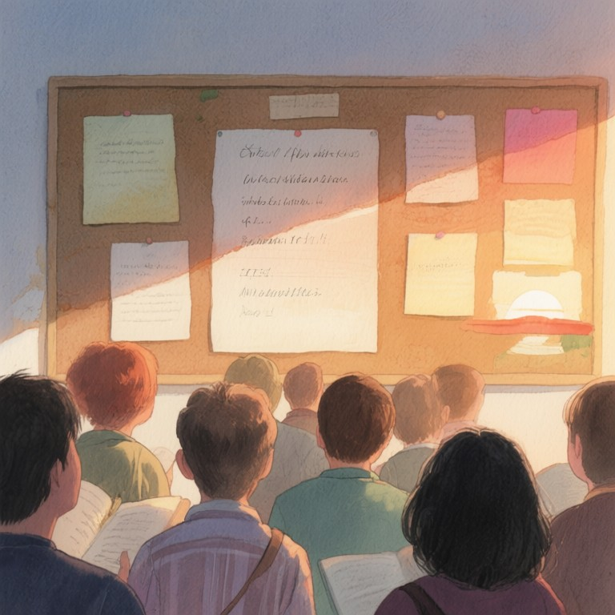

第七帖：二手的哲學

第七帖：二手的哲學
開學日的辦公室，空氣裡浮著梅雨季特有的濕黏。Cy老師把新的 Mac mini 從紙盒裡捧出來，銀色機身冷得像剛從冰箱拿出的玻璃瓶，連風扇轉動的聲音都是嶄新的、沒有雜質的嗡鳴。他沒立刻插線，而是先從櫃子頂層請下那台舊的——「藍鵝」。M1 晶片，十六 GB 記憶體，二五六 GB 儲存空間，機身左下角有一道茶褐色的燒痕，像某種古老的紋身。那是十年前颱風夜在寺廟值班時，燭台倒了留下的。
「退休了。」他對著藍鵝說，語氣像在跟一位老同事道別。藍鵝安靜地坐在櫃子上，螢幕沒亮，但 Cy 知道它裡面還住著東西：主機板上嵌著一小塊前代「傳承機」的備用晶片，第十四代宗匠四十年前寫的程式還「活」在裡面。宗匠是中部山線茶鄉的老茶師，收過一位姓戴的女弟子，那女弟子後來成了 Cy 的祖母。
他寫了一張公告，文體半文半白，像徵婚也像徵才。貼在校網與茶行布告欄時，他故意沒用電子檔，而是手寫在再生紙上。公告全文：
**徵求傳承者**
本機服役十年，機況良好，燒痕一枚，不予修補——那是它的年輪。
徵求條件三行： 一、會用它。 二、捨得用它。 三、用它做一件讓世界多一點好事的事。
本機不接受出價，只接受申請。申請不必寫自己的厲害，請寫你想讓它陪妳做什麼。
聯絡方式：辦公室櫃上信箱，或週二下午理化課後。
學生們把公告拍起來轉上社群，一夜爆紅。留言區吵起來：有人說行銷手法高明，有人罵飢餓行銷，有人認真問申請表在哪。Cy 老師在週二的理化課上把投影機關了，說：「今天不講電解。」他拿起藍鵝的機身，那道燒痕在日光下像一道淺淺的疤。「物件的靈魂是使用痕跡。全新的機器還沒有故事；二手的機器裡住著前一個人的十年。我找的不是買家，是下一個說故事的人。」
一個戴黑框眼鏡的學生舉手：「老師，這不算二手，這叫『有歷史的二手』。」 Cy 笑了：「對，歷史是別人寫的，痕跡是自己用的。」
一百零八位申請者湧入。申請書從礦機玩家到退休教授都有。有人寫想用它來算區塊鏈，有人寫想用它來寫詩，有人寫想用它來算退休金。Cy 把這些申請書匯入 lifeOS，「緣分排程器」史上第一次主動跳提示，只有一行：「排序完成。請用茶，不要用分數。」他愣住——排程器從來不接受指令，卻會下指令。
他沒把這行字告訴任何人。週末他騎機車去中部山線茶鄉，在厚茶行找到戴粉厚。粉厚二十八歲，木訥，手巧，對茶溫的記憶力驚人。他深蹲時會想到拜拜。Cy 把藍鵝放在桌上：「你阿嬤的筆記，想建系統？」 粉厚點頭：「想把她四十年的手感翻譯成資料，再教回給村裡的年輕人。」 Cy 問：「為什麼是這台？」 粉厚說：「因為它燒過。」 Cy 說：「因為它活過。」
他們沒簽任何文件。Cy 把藍鵝的電源線交給粉厚，說：「週二下午，我辦公室，帶茶來。」 粉厚問：「什麼茶？」 Cy 說：「你阿嬤最順手的那焙。」
回到學校，Cy 把新的 Mac mini 插好線。螢幕亮起，Apple 標誌閃爍。他打開終端機，輸入 lifeOS 的啟動指令。命令列介面跳出，字型是他自己手刻的明體。晨間 cron 自動卜了一卦，課表、體重與「心境重量」雙曲線、學生作業排程、宮廟籤詩資料庫、茶葉烘焙曲線對照——一切如常。
他走到窗邊，看雨。雨聲裡混著遠處宮廟的鑼鼓。他想起粉厚說「因為它燒過」時的眼神，像茶師看火，像工程師看 log。他覺得這台新機器會很安靜，而藍鵝會在新主人那裡繼續說話。
週二下午，粉厚帶著一焙「老茶」來了。Cy 用藍鵝的讀卡機讀了粉厚帶來的 SD 卡，裡面是阿嬤的手寫筆記掃描檔。lifeOS 的「緣分排程器」自動生成了一個新模組：「焙茶 lifeOS」。Cy 說：「這台是你的了。」 粉厚問：「那老師用什麼？」 Cy 指指新的 Mac mini：「我用這個。」 粉厚說：「這個還沒故事。」 Cy 說：「故事是用的，不是找的。」
粉厚走了，騎著機車消失在雨裡。Cy 把藍鵝的電源線收進帆布包，新的 Mac mini 在桌上發著微光。他打開 lifeOS，在「心境重量」曲線裡加了一筆註解：「傳承不是交接，是繼續。」
雨停了。他關上辦公室門，去雜貨店買了一瓶玻璃瓶可樂。店老闆問：「可樂老師，今天沒請學生喝？」 Cy 說：「今天請自己。」 店老闆笑：「欸，這台新的，會比舊的那台好嗎？」 Cy 說：「會，因為它還沒有燒痕。」 店老闆：「喔，那是好事。」 Cy 說：「不，那是它還沒開始。」
他騎上機車，風裡帶著濕氣。新機器的風扇聲在身後，舊機器的沉默在前方。他覺得這像某種儀式，某種在島嶼上反覆發生的、關於傳承與繼續的儀式。lifeOS 的「緣分排程器」在終端機裡閃爍，等待下一個指令。
他沒告訴粉厚，藍鵝的機身內，第十四代宗匠的晶片其實還活著。它會在某個深夜，透過網路，把一則關於火候與心緒的訊息，寄給戴粉厚。
那是後話了。
此刻，雨後的街道反光，像一面鏡子。Cy 老師騎著車，想著下週二的課要講什麼。也許講電解，也許講傳承。也許兩者都是同一回事。
他按了按喇叭，聲音在濕空氣裡傳得很遠。